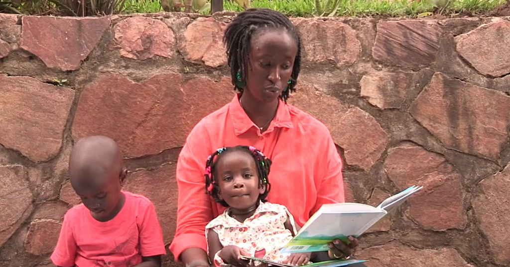

|

A parent reads a Kirundi-language children's story in Bujumbura. Photo courtesy of the Harabaye series.
|
When Burundian author Aïta Chancella Kanyange struggled to find books that reflected the realities of her children's lives, she decided to create them herself.
Her trilingual children's book series, Harabaye: Once Upon a Time, brings traditional Burundian folklore to life in Kirundi, French and English, giving young readers stories rooted in their own culture, language and lived experience.
What began as personal frustration is now part of a broader movement around culturally relevant education, indigenous storytelling and language preservation across Africa. Parents in Bujumbura increasingly turn to the books and live reading sessions as alternatives to imported narratives.
Why this matters
For communicators and brands, the lesson is powerful. Localisation is not translation. It is identity, trust and relevance. The organisations that resonate most deeply may be those that understand culture not as decoration, but as infrastructure.
Watch the spotlight feature →
|